D-Edge software utility guide
A publication by Donatoni Macchine S.r.l.
Software Version: 2026.2.6.0
Manual Version: 1.0
Date: 13/11/2026
Generalities
The informations contained in this document are applicable only to the software versions listed on the cover page.
It is possible that not all functions explainable by the product are described in the present documentation; in these cases DONATONI MACCHINE SRL is not, however, obliged to guarantee these functions nor to preserve them in future versions.
The present document is provided as attachment 'Section B', software part, of the machine usage and maintenance manual.
Purpose of the manual
This manual provides the necessary usage instructions for proper understanding of the D-Edge program and useful information to find solutions to malfunctions.
Compliance with what is described in this manual determines the proper operation, duration, and operating economy of the machine itself.
The user and maintenance manual of the machine and the present software manual must always be available at the installation site of the plant, in a safe and easily accessible location. If one of them is lost, contact the prevention and protection service manager.
Failure to comply with what is described in this manual, negligence, improper and inadequate use of the machine may result in cancellation, by the Manufacturing Company, of the warranty it provides for the machine itself, and furthermore, the benefits for which this machine was built may not be obtained.
DONATONI MACCHINE SRL remains available to provide prompt and accurate technical assistance and all that may be useful for optimal machine operation and to achieve maximum performance from the machine.
The Manufacturer reserves the right to modify, at its own discretion, this publication and the data contained therein whenever deemed necessary for technical or commercial improvement of the product.
Manual storage
The present Software Manual must be kept throughout the machine's operational life, even in case of transfer to third parties.
To properly save the Software Manual it is recommended:
Use the Manual in such a way as not to damage all or part of the Content; in particular it is recommended not to leave the Manual unattended during use and to store it in the assigned place immediately after the end of consultation;
Do not remove, tear or rewrite any parts of the Manual for any reason;
Store the Manual in areas protected from moisture, heat and other environmental agents that could compromise its integrity or durability;
In case of loss or damage to all or part of the Content of this Manual, request a copy of such documentation from the Manufacturer.
In this chapter are listed all the utilities that a Donatoni Technician can use to modify the machine.
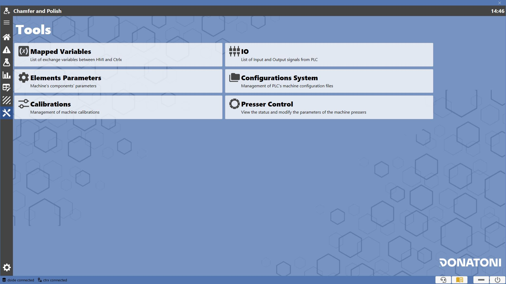
How to access
Go to the settings page from the menu on the left side. On the bottom right side of the page, search for the password button.
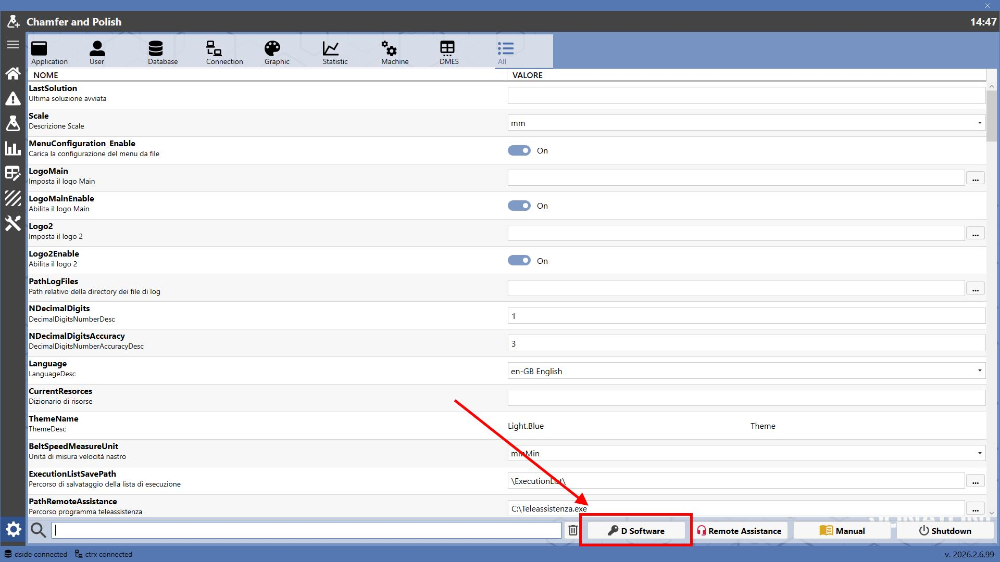
Enter the software password to access the application as a software technician. New pages will appear inside the Tools page of the software.
This page allows the technician to test the machine's electrical scheme by sending inputs and reading outputs directly from its electronic boards, bypassing the PLC’s control.

PLC management
The user can see the PLC status from the top right part of the window.

PLC version | |
 | PLC status |
 | Start/Stop PLC |
Browse data layer
On the left side of the screen there is a tree that shows the input/output directories of the machine.
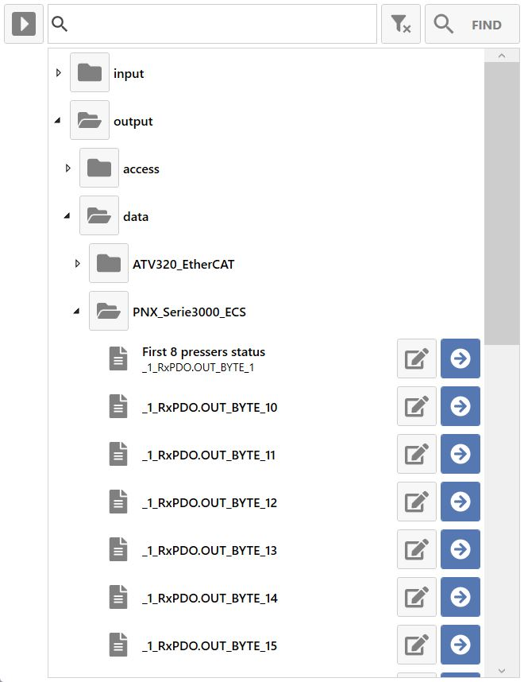
In order to find a variable, the user can follow the correct path or search it through the filter above.
Find | |
 | Remove filter |
The user can browse the data layer tree elements:
Folder | |
Variable |
For each variable, the user can perform two actions:
 | Note |
 | Monitor variable |
Using the button located on the top-left side, the user can hide the browsing panel and leave more space for the observed-variable list.
 | Show/Hide data-layer tree |
Monitored Variables
On the right side of the window there is a list that shows the list of monitored variables, where the user can read and/or modify for the real time value of each variable.

Configuration file
It is possible to load or save presets of monitored variables using the section above the list.

 | Monitoring configuration file |
 | Load monitoring configuration |
Save monitoring configuration as |
Variable
Every row of the list represents a variable, that is monitored in real time.
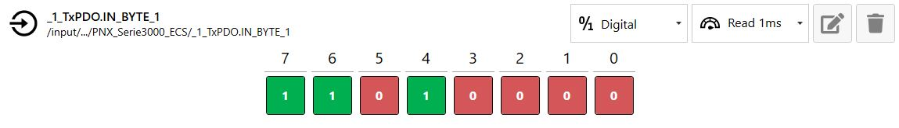
The variables are divided in two categories:
Input variable | |
Output variable |
It is possible to change the reading speed and the view of each variable:
View type | |
 | Read speed |
Moreover, the user can perform the following actions:
| Note |
 | Move variable down |
 | Move variable up |
 | Remove |
A page for the management of the configurations of the machine.
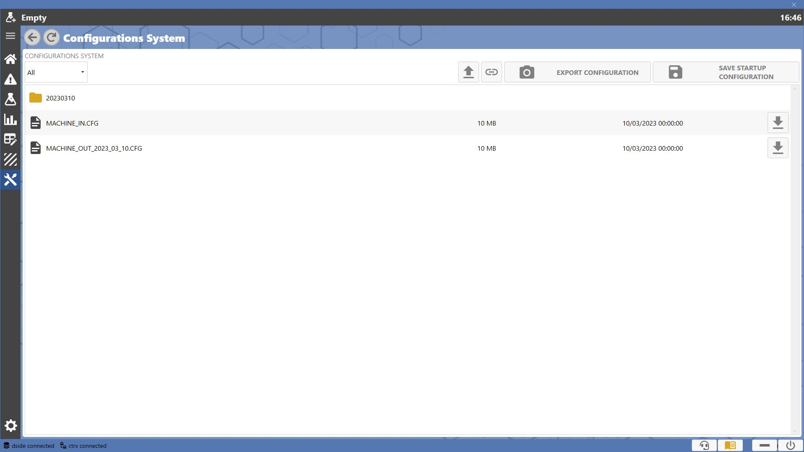
Configurations System
The user can see a list of all the configurations of the machine.
At the top of the page there are the following elements:
Filter List | |
Export Configuration | |
Save Startup Configuration | |
Upload configuration | |
Open website |
Configurations
Every row of the list is a machine configuration file. The file called “MACHINE_IN.CFG“ is the configuration file that the plc loads at startup, while the others are snapshot of the configuration at a given time.
Each configuration show the size of the file and the last modify date. Moreover, for every file it is possible to do the following actions:
 | Donwload Configuration |
The Calibrations page allows to read and adjust machine calibration parameters, check real-time values and carry out the calibration procedures described in the following sections.
Changing a parameter can write values to the PLC immediately. Some commands start machine actions. Check the selected component, the machine state and the entered values before making a change or starting a command. Use this page only within your assigned calibration responsibilities.

Navigation and page commands
On the top of the page there are buttons to navigate pages.
Back | |
 | Refresh |
Sections
Select a tab in the list on the left. Each section below has its own instructions, control descriptions and operating procedure.
 | Pneumatics |
Lubrication | |
Warmup | |
 | Oscillator Unit |
 | Angular Sensors |
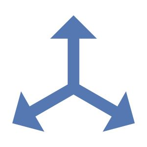 | Axes |
 | Belt |
 | Pressers |
Pieces | |
 | Workings |
Other |
Machine configuration status
When the PLC is turned off, the values of the modified parameters might be lost.
From this section it is possible to save the machine’s startup configuration to mantain those informations after a restart.
On the left side it is described the status of the configuration:
Updated | |
 | Update required |
In order to permanently save the parameters, use the following button:
 | Save Startup Configuration |
This section allows to modify the pneumatic head lowering advance for each configured working group.
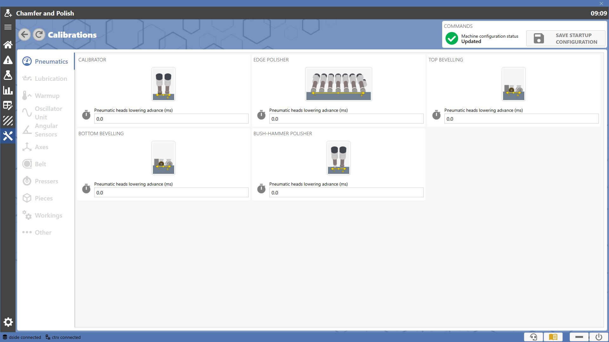
Sections
Each section is relative to a group of the machine.
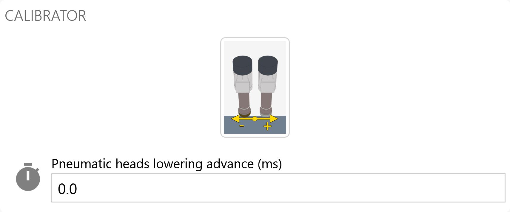
In the middle there is an image that describes the axis orientation in order to help the user with the correct use of the parameters.
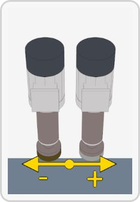
Parameters
Below this image are located the group parameters.
 | Pneumatic heads lowering advance |
This section allows to modify lubrication parameters, request a greasing cycle and read lubrication statistics.
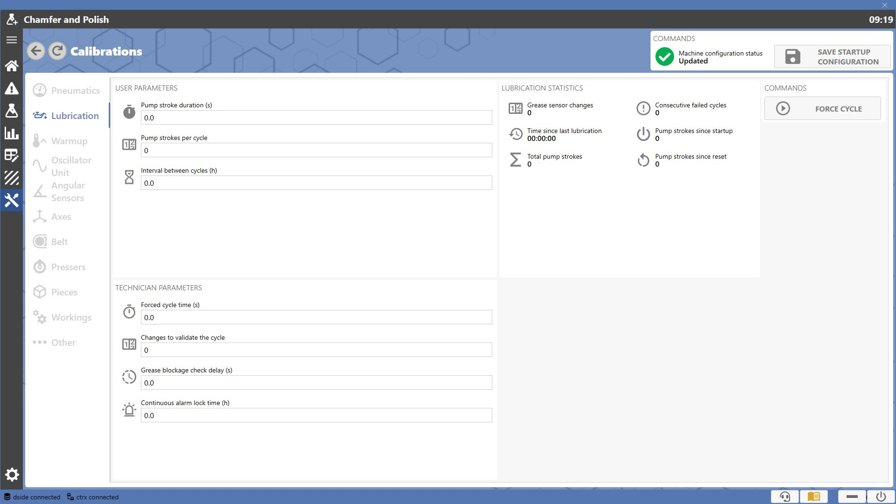
Commands
This section collects commands to force the machine to do operations described below.

 | Force cycle |
User parameters
In the top-left corner are collected basic parameters that affect the lubrication operations.

 | Pump stroke duration |
 | Pump strokes per cycle |
 | Interval between cycles |
Technician parameters
In the bottom-left corner are collected advanced parameters that affect how the cycle operates.
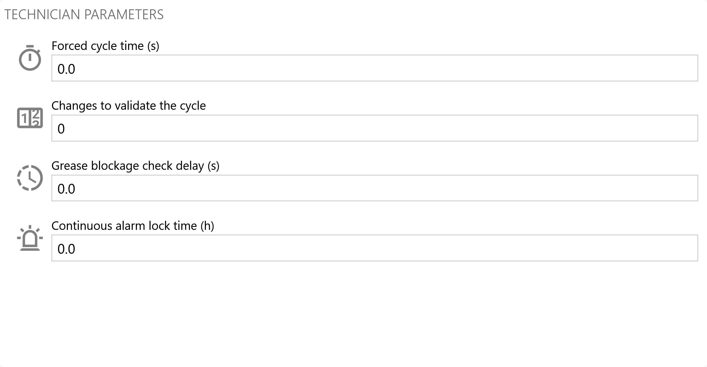
 | Forced cycle time |
| Changes to validate the cycle |
 | Grease blockage check delay |
Continuous alarm lock time |
Command and statistics
In this section are displayed statistics of the lubrication. In order to update the, refresh the page.
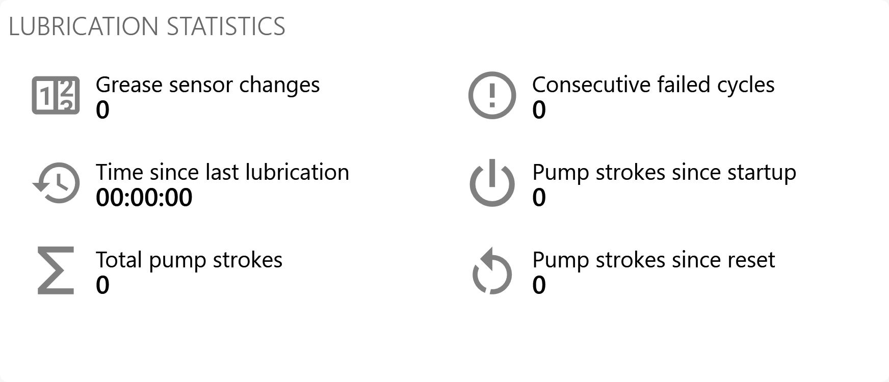
| Grease sensor changes |
 | Consecutive failed cycles |
 | Time since last lubrication |
Pump strokes since startup | |
 | Total pump strokes |
 | Pump strokes since reset |
In this section it is possible to modify warmup parameters and start presser, spindle or element pneumatics warmup.
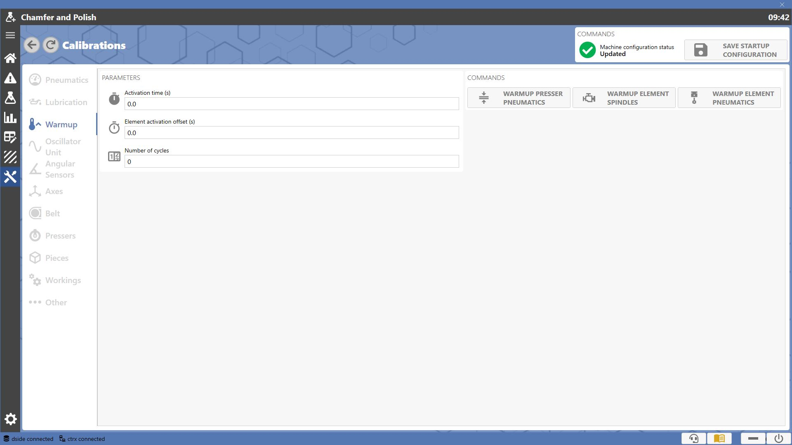
Commands
This section collects commands to force the machine to execute warmup cycles.
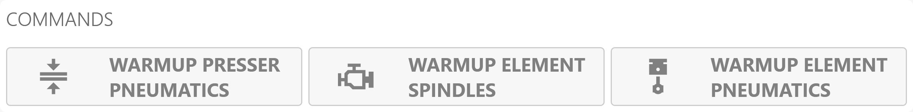
Warmup presser pneumatics | |
 | Warmup element spindles |
Warmup element pneumatics |
Parameters
From this section, the user can modify the settings of the warmup cycles.

 | Activation time |
 | Element activation offset |
Number of cycles |
This page allows to set oscillator parameters, read its status and start the homing cycle.
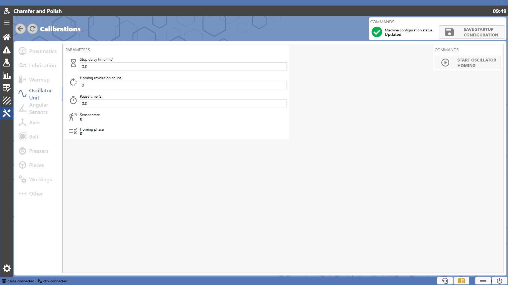
Commands
This section collects commands to force the machine to move the oscillator unit.
Start oscillator homing |
Parameters
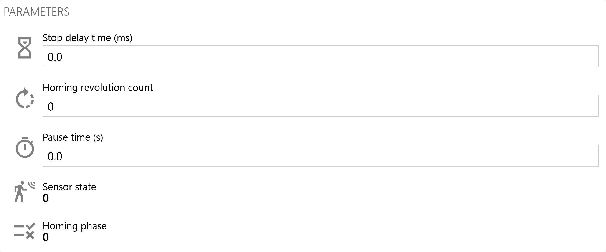
 | Stop delay time |
 | Homing revolution count |
 | Pause time |
By refreshing it is possible to update the informations displayed below.
 | Sensor state |
Homing phase |
This section can be used to calibrate the machine angular sensors.
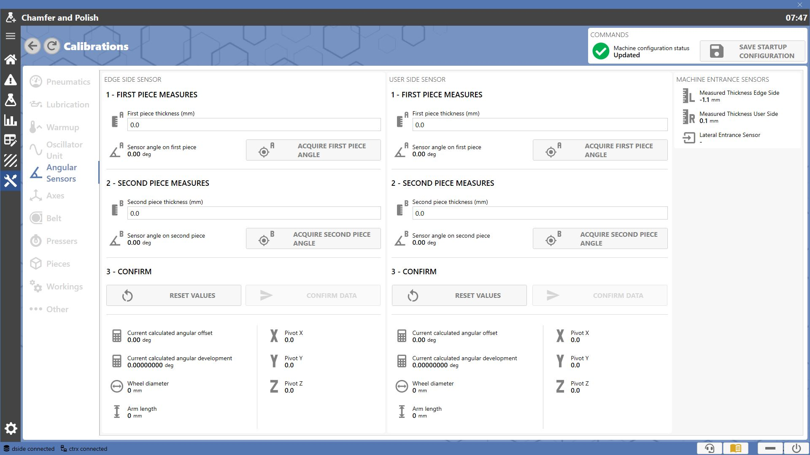
Machine entrance sensors

Measured Thickness Edge Side | |
 | Measured Thickness User Side |
 | Lateral Entrance Sensor |
Angular sensor parameters
The screen displays the sections dedicated to the angular sensors, arranged side by side.
The user can calibrate an angular sensor through the appropriate section.
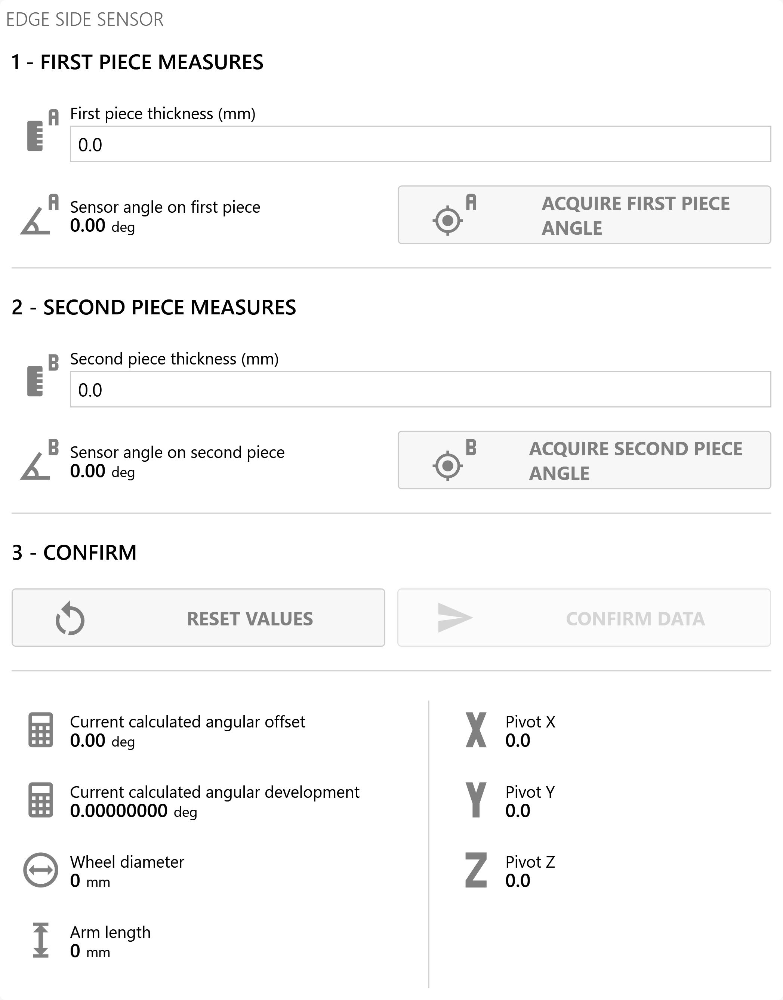
The User side sensor and Edge side sensor have the same fields and commands, and the user can follow the same procedure.
First piece measures
Values to acquire when the angular sensor is touching the belt.
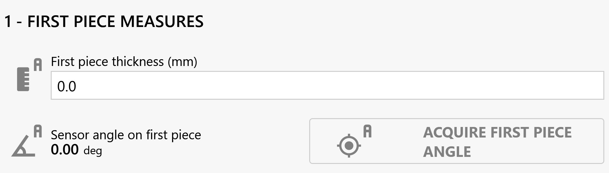
First piece thickness | |
 | Sensor angle on first piece |
 | Acquire first piece angle |
Second piece measures
Values to acquire when there is a piece below the angular sensor.
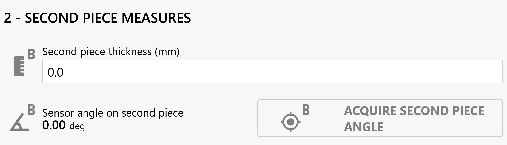
 | Second piece height |
Sensor angle on second piece | |
 | Acquire second piece angle |
Confirm
These commands allow to restart or complete the calibration procedure.
Confirm data | |
Reset values |
Sensor data
Data related to the sensor that can be obtained from the machine. In order to update these fields, refresh the page.
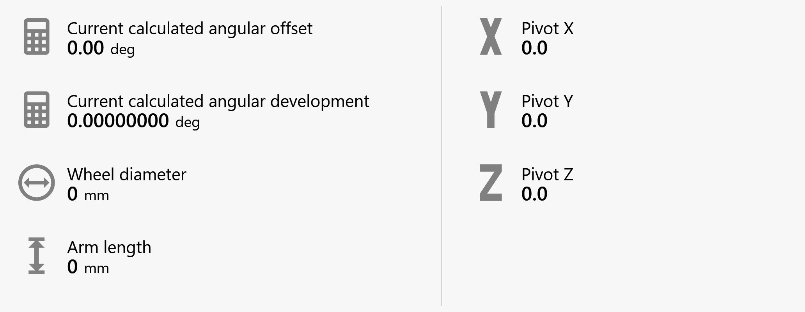
 | Current calculated angular offset |
| Current calculated angular development |
Wheel diameter | |
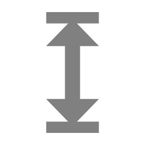 | Arm length |
 | Pivot X |
Pivot Y | |
 | Pivot Z |
Calibration procedure
Take a piece and measure its thickness.
Put the piece below the machine’s angular sensors
Enter the first piece thickness for the selected sensor and select Acquire first piece angle.
Use a second piece of different thickness and put it below the machine’s angular sensors.
Enter the first piece thickness for the selected sensor and select Acquire second piece angle.
Check both acquired angles, select Confirm data, and accept the confirmation dialog to send the values to the PLC.
Repeat for the other sensor when it also requires calibration.
Reset values clears a pending acquisition in the selected sensor card; it does not perform a PLC reset.
Select an axis, monitor coordinates, use held movement commands and adjust base or operating-mode parameters.
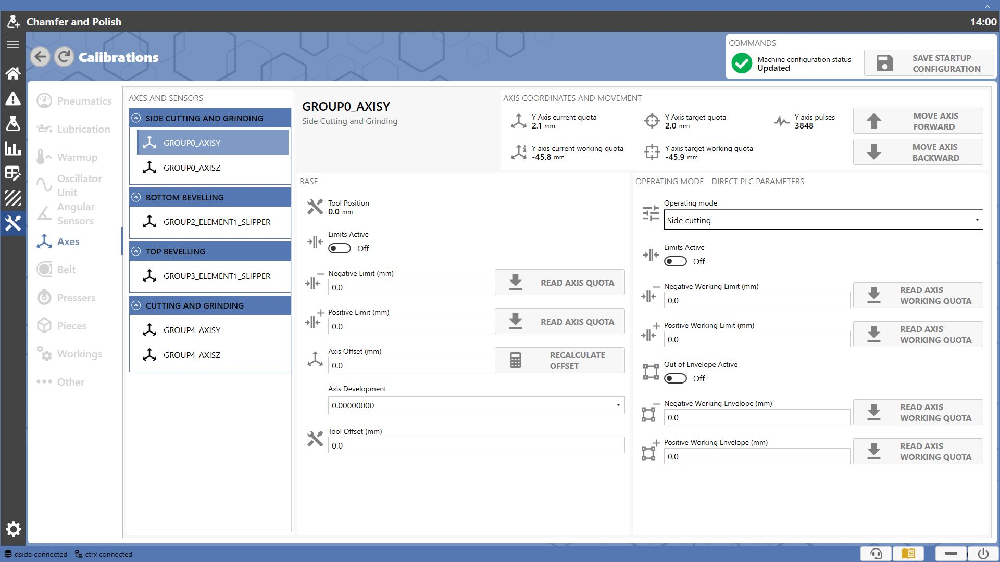
Axes list
On the left side are listed configured axes under their machine groups. Select a component to display its calibration parameters and observe live coordinates.
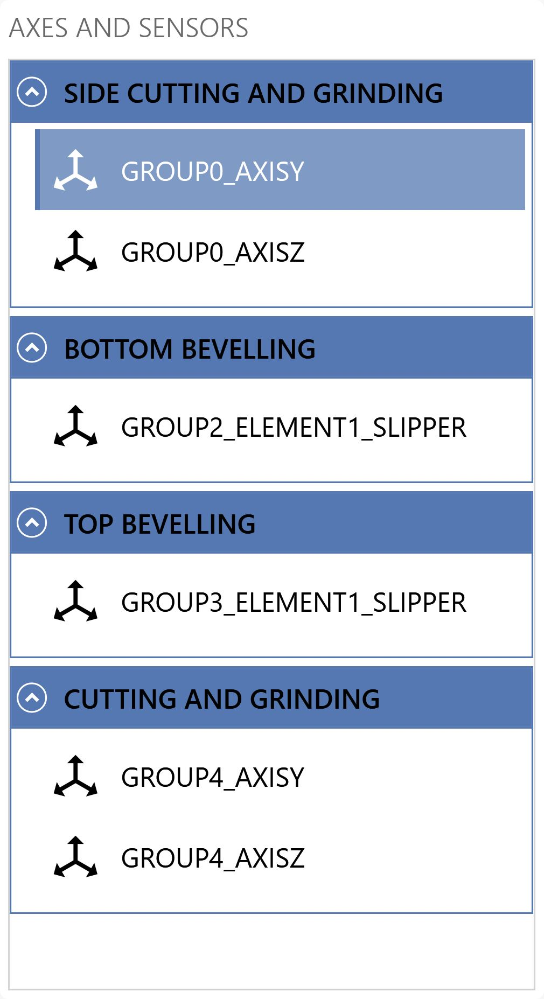
Changing a parameter can send a value to the PLC immediately. The movement buttons can move the selected axis while held. Check the selected component, the machine state and the entered values before using any control.
Axis coordinates and movement
The upper-right panel shows the selected axis's quotas and pulses. It is possible to move forward/backward the selected axis.

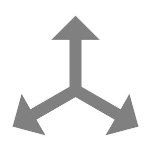 | Current axis quota |
 | Target axis quota |
Axis pulses | |
 | Current working quota |
 | Target working quota |
The user can move forward/backward the selected axis.
 | Move Axis Forward |
 | Move Axis Backward |
Base parameters
Contains the base parameters of the selected axis, independently of the operating-mode of its group.
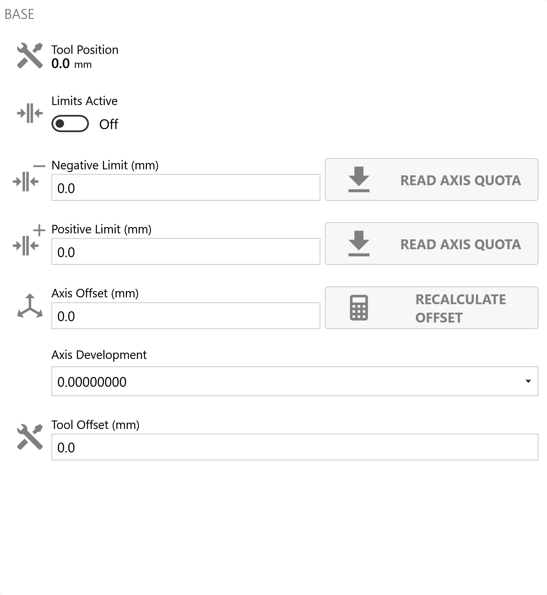
Tool Position | |
Limits Active | |
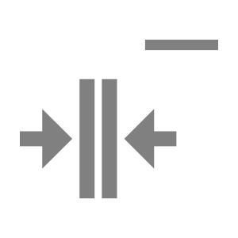 | Negative Limit |
 | Positive Limit |
 | Read Axis Quota |
Axis Offset | |
Recalculate Offset | |
Axis Development | |
Tool Offset |
Operating mode parameters
Parameters depending on the operating mode of the selected group. Choose an available Operating mode to read that mode's values. Available modes depend on the selected group.
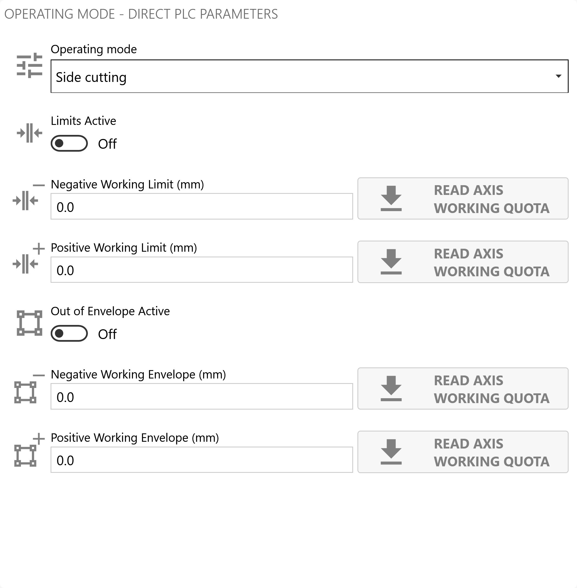
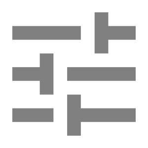 | Operating mode selector |
Limits Active | |
Negative Working Limit | |
| Positive Working Limit |
| Read Axis Working Quota |
Out of Envelope Active | |
 | Negative Working Envelope |
 | Positive Working Envelope |
Read belt development, measure a new development and use the separate belt reset command.
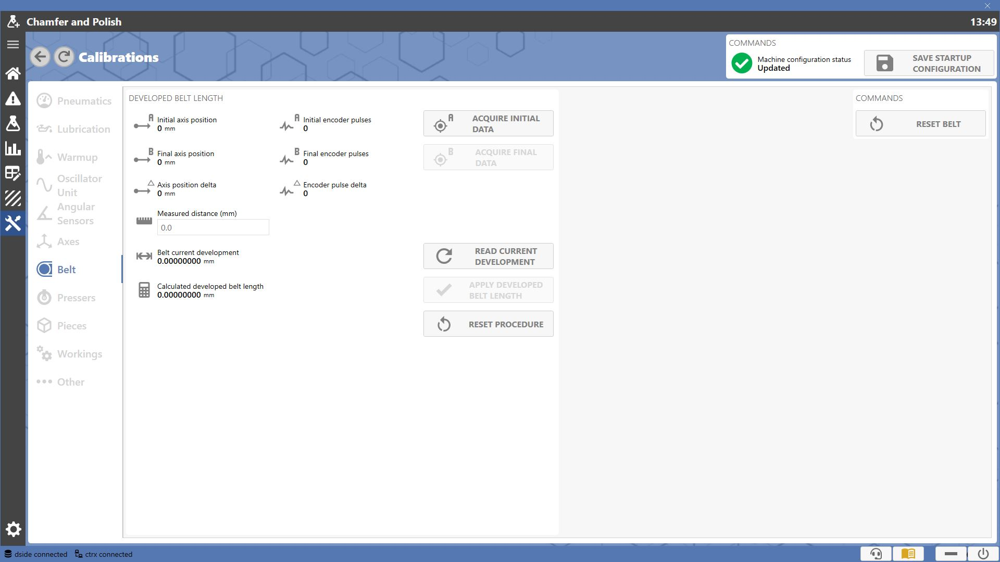
Commands
On the top-left section are collected commands for the belt.
 | Reset belt |
Parameters
This section guides the operator through the conveyor belt calibration procedure.

 | Current belt development |
Read current belt development |
The measurement proceeds from an initial point to a final point. In the icons, A marks initial data, B final data, and Δ their difference.
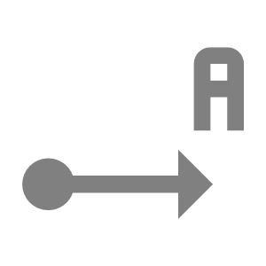 | Initial axis position |
 | Initial encoder pulses |
Acquire initial data | |
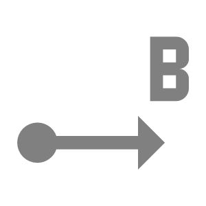 | Final axis position |
 | Final encoder pulses |
Acquire final data | |
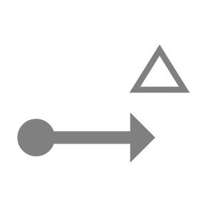 | Axis position delta |
 | Encoder pulse delta |
Measured distance | |
 | Calculated developed belt length |
 | Apply developed belt length |
| Reset procedure |
Belt measurement procedure
At the starting position, select Acquire initial data.
Move the belt with the appropriate machine controls, then select Acquire final data.
Enter the positive Measured distance between the two points. Check the displayed axis position delta, encoder pulse delta and calculated developed belt length.
Select Apply developed belt length and confirm to write the result to the PLC.
Adjust presser corrections, piston speeds and stroke, and apply an X offset.
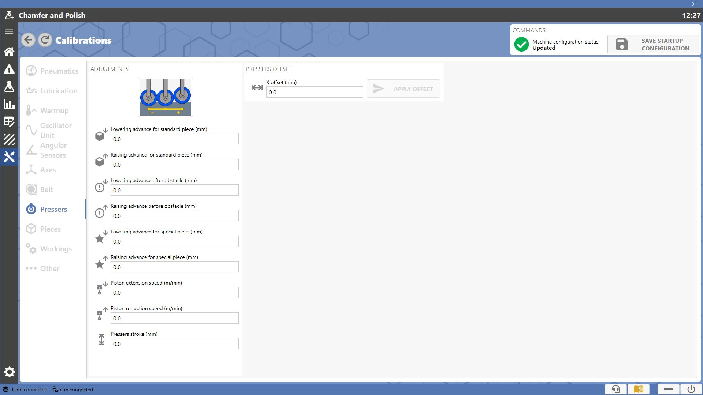
Corrections
In this sectio the user can adjust the parameters for the machines pressers.
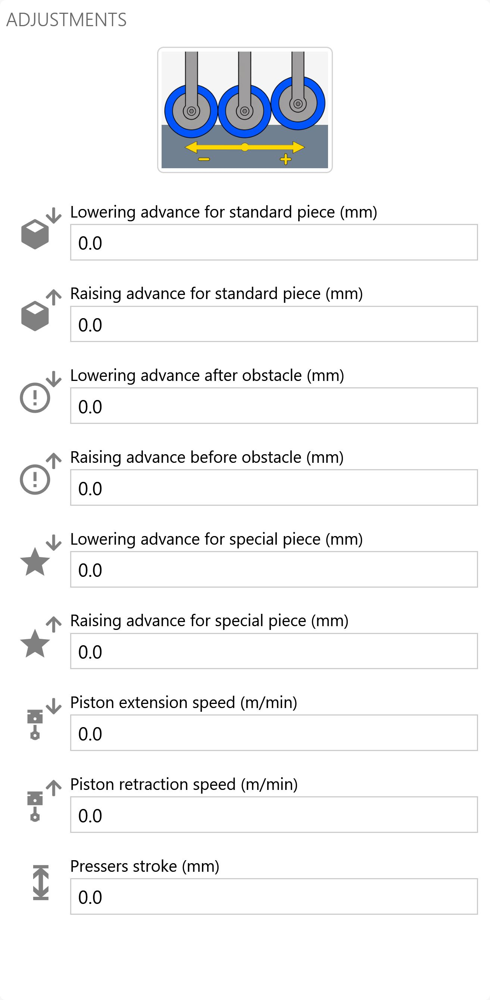
The reference image above the fields shows the presser orientation and follows the configured machine direction.

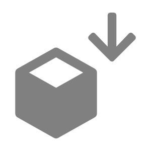 | Standard piece start descent advance |
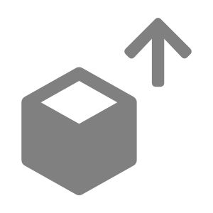 | Standard piece end ascent advance |
 | After-obstacle descent advance |
 | Before-obstacle ascent advance |
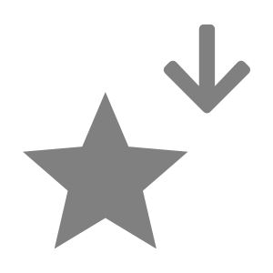 | Special piece start descent advance |
 | Special piece end ascent advance |
 | Piston extension speed |
 | Piston retraction speed |
 | Pressers stroke |
Pressers Offset
 | X offset |
 | Apply Offset |
Set piece spacing, shape detection and dimensional thresholds.
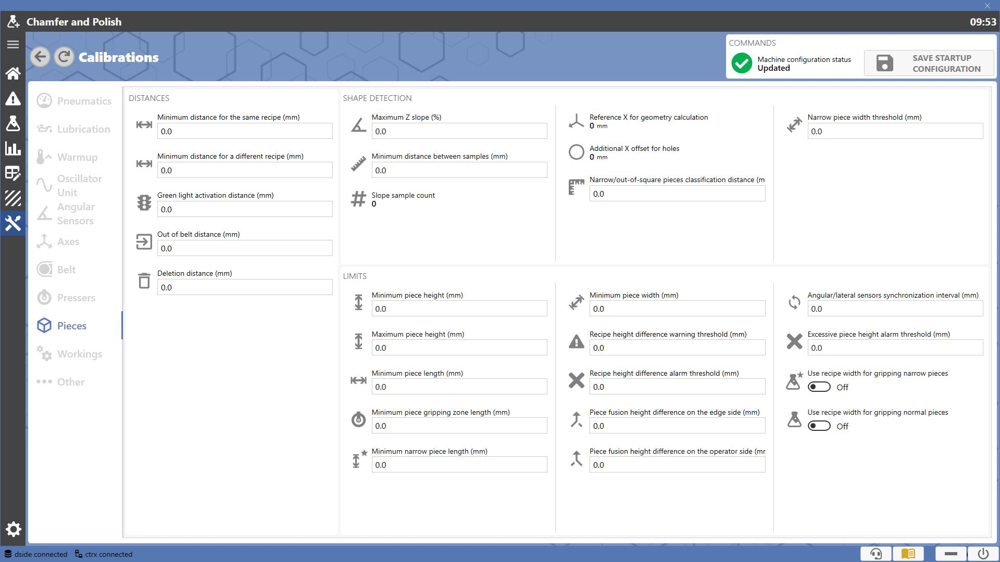
Distances
These values defines the distances between pieces used for machine logics.
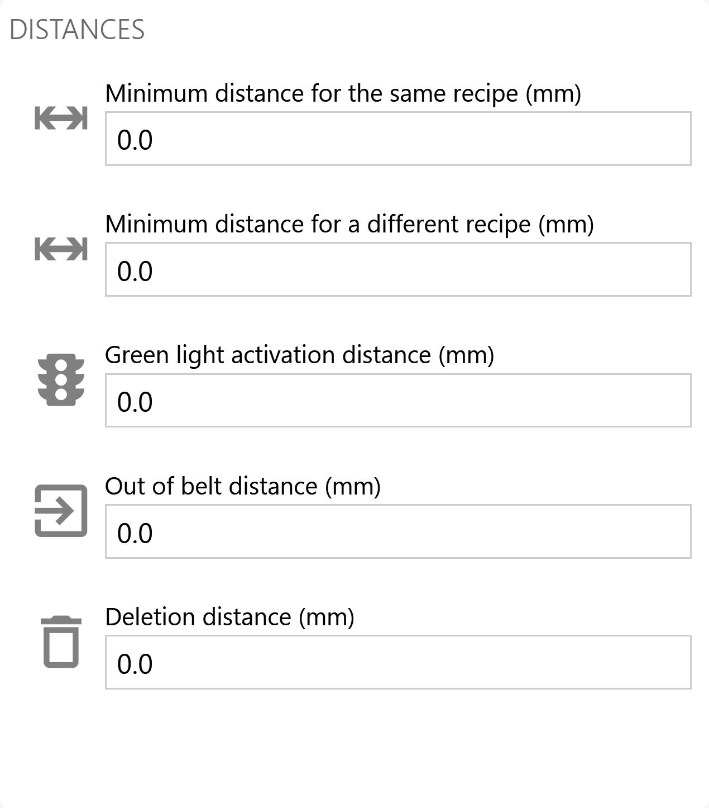
 | Minimum distance for the same recipe |
| Minimum distance for a different recipe |
 | Green light activation distance |
 | Out of belt distance |
 | Deletion distance |
Shape detection
These values control the inputs and thresholds used for pieces shape detection.
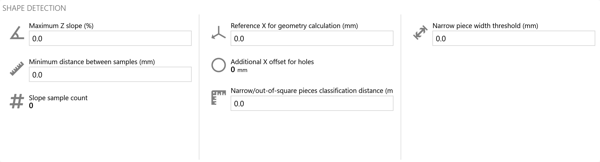
 | Maximum Z slope |
Minimum distance between samples | |
 | Slope sample count |
Reference X for geometry calculation | |
Additional X offset for holes | |
 | Narrow/out-of-square pieces classification distance |
Narrow piece width threshold |
Limits
These parameters define limits and thresholds for the pieces dimensions.
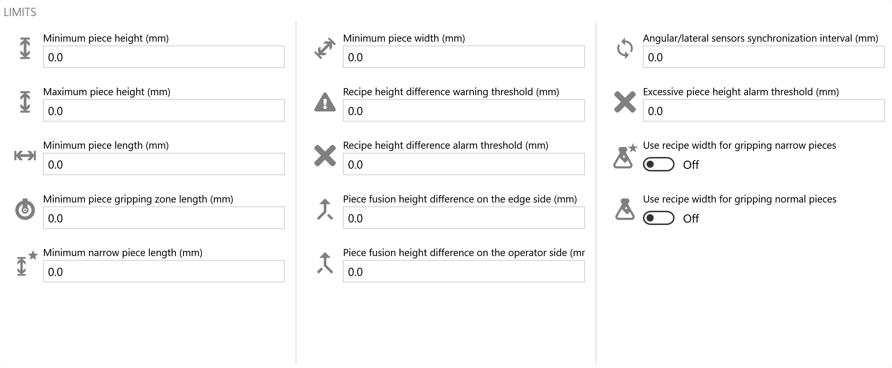
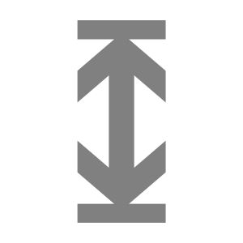 | Minimum piece height |
Maximum piece height | |
| Minimum piece length |
 | Minimum piece gripping zone length |
 | Minimum narrow piece length |
Minimum piece width | |
 | Recipe height difference warning threshold |
Recipe height difference alarm threshold | |
 | Piece fusion height difference on the edge side |
 | Piece fusion height difference on the operator side |
Angular/lateral sensors synchronization interval | |
Excessive piece height alarm threshold | |
Use recipe width for gripping narrow pieces | |
 | Use recipe width for gripping normal pieces |
Set machining depth limits and working parameters.

Working Parameters
These values define machining depth limits and working settings.

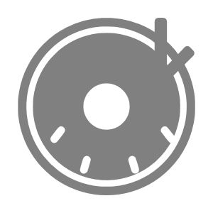 | Maximum calibration depth |
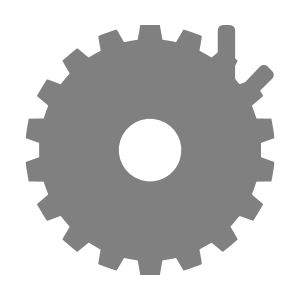 | Maximum cutting depth |
Side rectify Z axis initial position | |
 | Pneumatic descent speed |
 | Pneumatic ascent speed |
 | Chamfer skater quota mode |
 | Synchronize angular sensor positions |
 | Piece ID referenced to edge-side sensor |
 | Piece height assignment mode |
 | Chamfer Z collision tolerance |
Top cutting height from recipe |
Set general machine calibration parameters.

General settings
These parameters configure the motor monitoring, top chamfer Z-axis lock, piece identifier and Modbus fault alarm.

 | Enable motor thermal protection monitoring |
 | Lock top chamfer Z axis while spindles are on |
 | Enable automatic spindle startup |
Last piece ID | |
 | Enable Modbus module fault alarm |
Modbus module fault alarm delay |
From the Tools page, choose Presser Control to view the machine pressers and access their controls and parameters.
This page is accessible at the software technician level. The number of pressers displayed depends on the machine configuration, up to 64.

Page controls
The Force section acts on all displayed pressers.
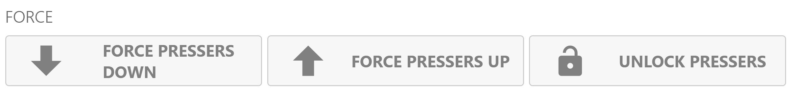
 | Force pressers down |
 | Force pressers up |
 | Unlock pressers |
The Modes section selects what happens when the user clicks a single presser. Selecting a mode alone does not move or unlock a presser.
| Force Up |
| Force Down |
| Unlock |
Edit |
Unlock removes manual forcing; it does not mean “force up”. The following presser position is determined by the machine logic.
Presser grid and indicators
Each tile identifies one presser and shows its reported state. A green background indicates Up, orange indicates Down, and grey indicates Disabled. The reported state and a requested forcing state are separate: after issuing a command, check the returned state.
 | Manual forcing indicator |
 | Forced Up indicator |
Forced Down indicator | |
Edit indicator |
Presser Parameters Window
From this window the user can see and modify the presser parameters.

Commands
| Force Up |
| Force Down |
| Unlock |
Reload |
Base parameters
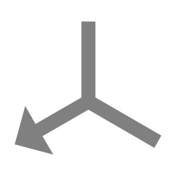 | Piston centre X |
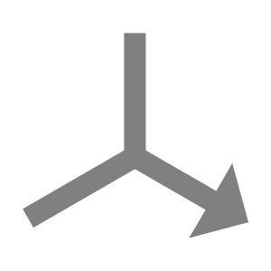 | Piston centre Y |
 | Piston centre Z |
Wheel geometry | |
 | Wheel offset on edge side |
| Wheel offset on user side |
 | Axis |
 | Interference between linked pressers |
 | Working group index |
 | Lowering advance |
Raising advance |
Calculations
Piece on edge side wheel | |
Piece on user side wheel | |
Wheel height on edge side | |
Wheel height on user side | |
 | Wheel width on edge side |
 | Wheel width on user side |
 | Mechanical obstacle envelope |
 | Wheels envelope X |
Wheels envelope Y | |
 | Wheels envelope Z |
Grip centre X | |
Grip centre Y | |
| Grip centre Z |
States
 | ID |
 | IO output |
 | IO output index |
| Number of planned workings |
Forced state | |
Grip limit X | |
Grip limit Y | |
| Grip limit Z |